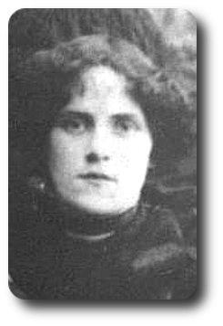

-->> 1910.04.07 (22)
-->> 1910.04.07 (22)

Daughter of George William Newbury (born in 1859 in Sundon, Bedfordshire) and Caroline Bester (born in 1865 in Little Eversden, Cambridge) who were married in 1887 in Edmonton, Middlesex.

From The Weekly Times Orillia, Thursday, April 30th 1911
A
Sad Death
Sad indeed were the circumstances surrounding the death of Elizabeth
Annie Newbury, wife of Harry Allinson, which occurred at Orillia
General Hospital on Tuesday afternoon, April 18, at the early age of
23 years and 19 days. Mrs. Allinson was in apparently good health
until Monday night, when she was taken very ill, and the doctor
ordered her removal to the hospital. Mrs. Allinson died about 1:30
p.m. on Tuesday, leaving an infant a few hours old. Her husband, who
was at Lefroy, was sent for, and reached home just before she died.
Deceased was the eldest daughter of Mrs. George Newbury, and leaves
to mourn her early demise her mother, two brothers, William Charles
and Thomas, In Orillia, and two sisters, Millie, in Toronto, and
Annie, at home. She is also survived by her husband and two
children, Constance, aged five years, and the infant daughter. Mrs.
Allinson was born in Edmonton, England, and came to Orillia just a
year ago. The funeral services at the house, Dunlop street, this
(Thursday) afternoon at 2:30, and at the church at 3, will be
conducted by Rev. H. D. Raymond, Curate of St. James' church. The
relatives have the sincere sympathy of a large circle of friends in
this their hour of bereavement.
1888.03.31 is born in Edmonton, Middlesex, England ( unconfirmed: Jun 1888, Edmonton, v.3a, pg.381 )
1891.04.05 (3) is living in Edmonton, Middlesex, England at 10 Gourie Terrace on Church St.
| 1891.04.05 Census, Civil Parish of Edmonton, Ecclesiastical Parish or District of All Saints | ||||||
| Residence: 10 Gourie Terrace on Church St., Edmonton, Middlesex | ||||||
| Last names | First names | Relation to Head | Condition as to Marriage | Age on Last Birthday | Occupation | Where Born |
| NEWBURY | GEORGE | Head | M | 31 | Carman | Beds, Sundon |
| NEWBURY | CAROLINE | Wife | M | 27 | Carman | Cams, Eversden |
| NEWBURY | ALFRED | Son | -- | 13 | Scholar | Middx, Edmonton |
| NEWBURY | ELIZABETH | Daur | -- | 3 | -- | Middx, Edmonton |
| NEWBURY | MILLICENT | Daur | -- | 2 months | -- | Middx, Edmonton |
1897.09.07 This was a big day, Elizabeth, Millie, Bill and Annie were all baptised at Tottenham in All Hallows on this Tuesday.
| 1897. Baptisms solemnized in the Parish of Tottenham in the County of Middlesex in the year 1897. | |||||||
| When Baptised | Child's Christian Name | Parents Name | Abode | Profession | |||
| 1897 Septr 7 | Elizabeth Annie | George William & Caroline | 8 Prospect Place, Church Row | Grave digger | |||
1901.03.31 (13) is living in Tottenham, Middlesex, England at 8 Prospect Place
| 1901 UK Census, Civil Parish of Tottenham, Ecclesiastical Parish of All Hallows (part of) | ||||||
| Residence: 8 Prospect Place, Tottenham, Middlesex | ||||||
| Last names | First names | Relation to Head | Condition as to Marriage | Age on Last Birthday | Occupation | Where Born |
| NEWBURY | GEORGE | Head | M | 42 | Labourer | Beds Bedford |
| NEWBURY | CAROLINE | Wife | M | 37 | -- | E Cambridge |
| NEWBURY | ELIZABETH | Daur | -- | 13 | -- | Middx Edmonton |
| NEWBURY | MILLICENT | Daur | -- | 10 | -- | Middx Edmonton |
| NEWBURY | WILLIAM | Son | -- | 7 | -- | Middx Edmonton |
| NEWBURY | ANNIE | Daur | -- | 5 | -- | Middx Edmonton |
| NEWBURY | GEORGE | Son | -- | 10 m. | -- | Middx Edmonton |
1904.10.21 (16) father George William Newbury dies in England
1905.06.11 (17) Elizabeth marries in Edmonton, Middlesex, England in St. James Church ( Jun 1905, Edmonton, v.3a, pg.682 ) to:
| 1905. Marriage solemnized at St. James Church in the parish of Edmonton in the County of Middlesex | |||||||
| When Married | Name and Surname | Age | Condition | Profession | Residence | Father's Name | Profession of Father |
| June 11th, 1905 | Harry Allinson | 21 | Bachelor | Labourer | 10 Sandal Road | James Alfred Allinson | Labourer |
| Elizabeth Annie Newbury | 19 | Spinster | -- | 10 Sandal Road | George William Newbury (deceased) | Labourer | |
| Married in the Church of St. James according to the Rites and Ceremonies of the Established Church by --- after Banns by me, | Lucius G. Fry, M.A., Vicar | ||||||
| This Marriage was solemnized between us | Harry Allinson | in the Presence of us | Albert Machin | ||||
| Elizabeth Annie Newbury | Ellen May Allinson | ||||||
possible match: 1882.08.03 Harry was baptised at Tottenham in All Hallows
| 1882. Baptisms solemnized in the Parish of Tottenham in the County of Middlesex in the year 1882. | |||||||
| When Baptised | Child's Christian Name | Parents Name | Abode | Profession | |||
| 1882 August 3rd | Harry Allinson | James and Elizabeth | Walton's Cottage, Tottehham | Labourer | |||
1911.04.18 (28) wife Elizabeth dies in Orillia, new baby survives
1911.06.01 census: (28) living in Orillia, Ontario, Canada on Dunlop Street, (driver, house painter) ( living with daughters Constance Annie (5), Elizabeth Allinson (2 m.), mother-in-law Caroline Newbury (45), sister-in-law Annie Newbury (16) and brother-in-law Thomas Newbury (7) ) [census pg.17], [census pg.18]
1912.07.01 (29) m. Edith Emma Russell Affidavit says: On the 1st day of July 1912 at the Town of Orillia in the County of Simcoe; Husband: Harry Allinson, Place of Birth: England, Nationality: English, Widower, 28 years old, Anglican, Residence: Orillia, Father: James Albert Allinson, foreman in Rubber? Works, mother's maiden name: Emily Allinson nee Hillott; Wife: Edith Emma Russell, Place of Birth: England, Nationality: English, Spinster, 22 years old, Anglican, Residence: Orillia, Father: Mark Russell, Book Keeper and Musician, mother's maiden name Emma Russell nee Reid. Witnesses: William John Hinlon, Orillia and Olivia Mary Russell, Orillia.
1962.02.27 (78) d. [cemetery marker]
![[cemetery marker]](images/allinson-harry - stone.jpg){kind=link}
1906.05 (18) first child Constance Annie is born in England
1908.04.02 (20) mother Caroline (Bester) Newbury and three youngest emigrate to Canada
1909.09.09 (21) sister Millicent Newbury emigrates to Canada
1910 APR 07 (22) family emigrates to Canada
| 1910 APR 07 Sailed from Liverpool, England on the Dominion Line's S.S. Canada (stopped in Halifax, Nova Scotia and Portland, Maine) | ||||||||
| 1910 APR 16 Arrived in Portland, Maine, U.S.A. | ||||||||
| Amt of Cash | Name of Passenger | Age | Able to Read | Able to Write | Married or Single | Occupation | Country of Birth | Destination |
| $5.00 | Harry Allinson (5'8", dark complexion, dark hair, dark eyes) | 26 | Y | Y | M | Farm Labourer | English | Orillia |
| -- | Elizabeth Allinson, Wife (5'6", dark complexion, brown hair, grey eyes) | 24 | Y | Y | M | -- | English | Orillia |
| -- | Constance Allinson, Child (fair hair, brown eyes) | 3 | N | N | S | -- | English | Orillia |
| Above from Library and Archives Canada, Reference: RG 76, MicroFHL Call No: T-4736: ship's passenger list - they are on page 18 but you can't read it. | ||||||||
| From List or Manifest of Alien Passengers for the United States Immigration Officer at Port of Arrival: | ||||||||
|
Last Permanent Residance: London, England Nearest Relative or Friend in Country Whence Alien Came: Father, 3 Seales Rd, Tottenham Joining a Relative or Friend?: Mrs. Newbury, Wife's mother, Victoria St. Orillia, Ontario |
||||||||
| From first page of Manifest: | ||||||||
| Number of Souls: 1135 Adults, 189 Children. Passengers: Saloon: 0; 2nd Cabin: 231, Steerage: 405. | ||||||||
1911.04.18 (23) second child May is born in Orillia, Ontario, Canada
1911.04.18 (23) Elizabeth dies in Orillia, Ontario, Canada Register says: County of Simcoe, Division of Town of Orillia, Allinson, Elizabeth Annie; Date of Death: April 18, 1911; Date of Birth: March 30, 1888, Edmonton, England; Age: 23 years, 19 days; Place of Death: Orillia General Hospital; married; Father: George Wm Newbury, born: England; Mother: Caroline Bester, born: England; Certified by: Harry Allinson, Orillia, Date: April 19, 1911; Cause of Death: Eclampsia, 12 hours; acute pulmonary edema, 2 hours; Physician's name: C. S. Wainwright, Orillia. [cemetery marker in St. Andrew's St.James' Cemetery in Orillia, Ontario]
{kind=link}
-
Constance Annie Allinson ( 1906 - 1988 )
-->>
1906.05.12 is born in Edmonton, Middlesex, England ( unconfirmed: Jun 1906, Edmonton, v.3a, pg.666 )
1906.07.02 Constance was baptized.
1906. Baptisms solemnized in the Parish of St. James' Upper Edmonton in the County of Middlesex in the year 1906. When Baptised Child's Christian Name Parents Name Abode Profession 1906 2nd July Constance Annie Harry and Elizabeth Annie Allinson 84 Raynham Road Painter 1910 APR 07 family emigrates to Canada
1910 APR 07 Sailed from Liverpool, England on the Dominion Line's S.S. Canada (stopped in Halifax, Nova Scotia and Portland, Maine) 1910 APR 16 Arrived in Portland, Maine, U.S.A. Amt of Cash Name of Passenger Age Able to Read Able to Write Married or Single Occupation Country of Birth Destination $5.00 Harry Allinson (5'8", dark complexion, dark hair, dark eyes) 26 Y Y M Farm Labourer English Orillia -- Elizabeth Allinson, Wife (5'6", dark complexion, brown hair, grey eyes) 24 Y Y M -- English Orillia -- Constance Allinson, Child (fair hair, brown eyes) 3 N N S -- English Orillia Above from Library and Archives Canada, Reference: RG 76, MicroFHL Call No: T-4736: ship's passenger list - they are on page 18 but you can't read it. From List or Manifest of Alien Passengers for the United States Immigration Officer at Port of Arrival: Last Permanent Residance: London, England
Nearest Relative or Friend in Country Whence Alien Came: Father, 3 Seales Rd, Tottenham
Joining a Relative or Friend?: Mrs. Newbury, Wife's mother, Victoria St. Orillia, OntarioFrom first page of Manifest: Number of Souls: 1135 Adults, 189 Children. Passengers: Saloon: 0; 2nd Cabin: 231, Steerage: 405. 1911.04.18 (4) her mother Elizabeth dies in Orillia, age 23, her baby sister survives
1911.06.01 census: living in Orillia, Ontario, Canada on Dunlop Street [census pg.17], [census pg.18]
1911 CAN Census, Civil Parish of Tottenham, Ecclesiastical Parish of All Hallows (part of) Residence: Dunlop Street, Orillia Ontario Name of each person Relation to Head Single, Married ... Month of birth Year of birth Age on last birthday Place of birth Year of naturalization Racial origin Religion Occupation Where Employed ALLINSON HARRY Head M Aug 1883 27 England 1910 English Anglican ?? House Painting ALLINSON CONSTANCE Daughter S Mar 1906 5 England 1910 English Anglican None -- ALLINSON ELIZABETH Daughter S April 1911 ?? Ontario -- English Anglican None -- NEWBURY CAROLINE Mother in Law W May 1866 45 England 1907 English Anglican None -- NEWBURY ANNIE Sister in Law S Sep 1894 16 England 1907 English Anglican None -- NEWBURY THOMAS Brother in Law S Oct 1900 10 England 1907 English Anglican None -- 1925.12.23 (19) in Orillia, Ontario Constance marries:
William Russell Shaw ( 1901 - 1971 ) Affidavit says: At Orillia, in the County of Simcoe, on the 2nd day of December, 1925. Bridegroom: William Russell, 24 years, Residence: Orillia Born: Township of Oro; Bachelor; Occupation: Steel melter; English; Father: Thomas Shaw; Mother: Ellen Jones; Bride: Contance Annie Allinson; 19 years, Residence: Orillia; Born: Edmonton, Middlesex, England; Spinster; Occupation: Housewife; English; Father: Harry Allinson; Mother Elizabeth Annie Newberry. Witnesses: ?ayde White, Orillia and Gertie Shaw, Hawkestone.1988.08.27 (82) dies in Orillia, Ontario [cemetery marker in St. Andrew's St.James' Cemetery in Orillia, Ontario]
-
Elizabeth (May) Annie Allinson (
1911 - 1987 )
1911.04.18 is born in Orillia, Ontario, Canada - from Ontario Birth Register, Simcoe County, Town of Orillia (Archives of Ontario microfilm MS929_222) : Allinson, Elizabeth Annie, born April 18, 1911, Orillia General Hospital, parents married=Y in England June 16, 1905, Harry Allinson (painter) and Elizabeth Annie Newbury, physician attending _. S. Wainwright, certified by Harry Allinson, May 15, 1911 - not in house at time of birth.
1911.04.18 mother Elizabeth (23) dies in Orillia, Ontario, Canada
1911.06.01 census: living in Orillia, Ontario, Canada on Dunlop Street [census pg.17], [census pg.18]
1911 CAN Census, Civil Parish of Tottenham, Ecclesiastical Parish of All Hallows (part of) Residence: Dunlop Street, Orillia Ontario Name of each person Relation to Head Single, Married ... Month of birth Year of birth Age on last birthday Place of birth Year of naturalization Racial origin Religion Occupation Where Employed ALLINSON HARRY Head M Aug 1883 27 England 1910 English Anglican ?? House Painting ALLINSON CONSTANCE Daughter S Mar 1906 5 England 1910 English Anglican None -- ALLINSON ELIZABETH Daughter S April 1911 ?? Ontario -- English Anglican None -- NEWBURY CAROLINE Mother in Law W May 1866 45 England 1907 English Anglican None -- NEWBURY ANNIE Sister in Law S Sep 1894 16 England 1907 English Anglican None -- NEWBURY THOMAS Brother in Law S Oct 1900 10 England 1907 English Anglican None -- 19?? marries:
James A. Elvin ( 1911 - 1987 )1987 (76) Elizabeth is buried in Orillia, [cemetery marker in St. Andrew's St.James' Cemetery in Orillia, Ontario]
{kind=link}
{kind=link}